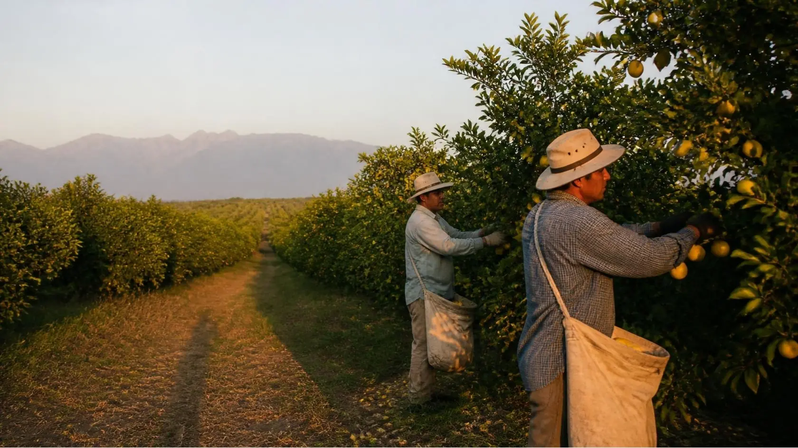
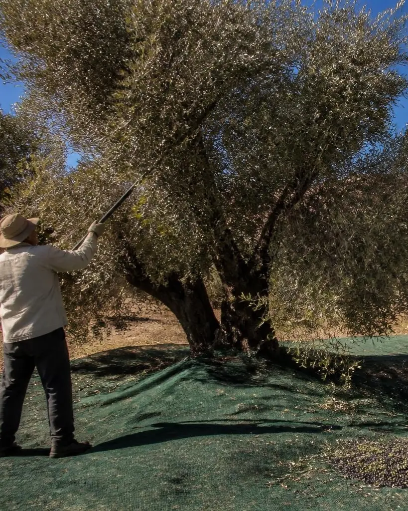
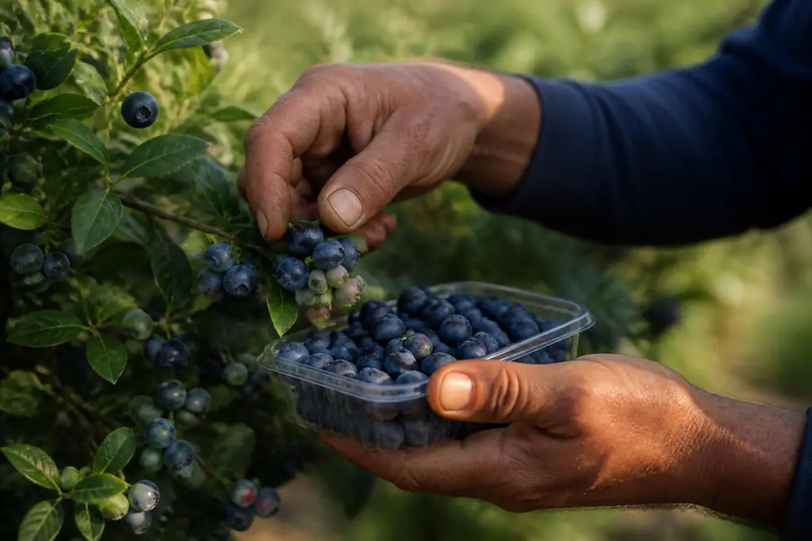
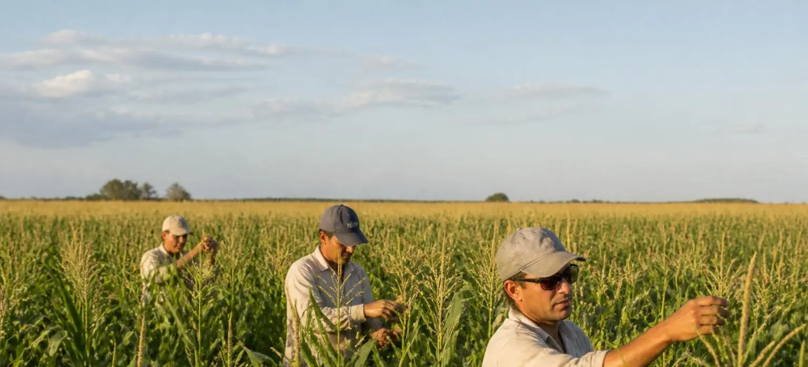

Que tu temporada no se termine.
Un circuito anual de cosechas que conecta cuadrillas y productores. Traslado coordinado, alojamiento verificado y registro laboral.
Proyecto en validación. Todavía no es una oferta de trabajo.
Circuito Norte-Pampa propuesto, de agosto a julio, con base en Santiago del Estero
- Ago a octArándanoTucumán
- Nov a eneDespanojadoPergamino
- Feb a abrAceitunaCatamarca y La Rioja
- May a julLimónTucumán
La cosecha termina. El año sigue.
Unas 150.000 personas siguen las cosechas cada año y 35.000 salen de Santiago del Estero, en cuadrillas de 13 a 17 personas.
Cada campaña dura dos o tres meses. Cuando termina, hay que volver a casa y salir a buscar la próxima, muchas veces sin registro.
- Arándano
- Despanojado
- Aceituna
- Limón
- Separación: pausa en casa entre tramos
- 67%
de los asalariados agrícolas no está registrado.
INDEC 2024, vía Infobae - 6%
de los migrantes rurales accedió a la prestación por desempleo.
OIT, 2026 - 01/09/2026
venció el decreto 514/2021, que permitía cobrar un plan social y trabajar registrado en la cosecha.
Huella del Sur, 2026

El movimiento que conecta las cosechas.
La propuesta de Bandada es coordinar cuadrillas, traslados y alojamiento para que el final de una cosecha sea el comienzo de la siguiente. El productor recibe una cuadrilla planificada; la cuadrilla, un tramo detrás de otro.
Continuidad entre temporadas
Los tramos se encadenan por calendario, con pausas en casa entre uno y otro.
Cuadrillas coordinadas
Grupos de 13 a 17 personas con un Jefe de Bandada que las lidera.
Traslado y alojamiento verificado
Micro coordinado desde Santiago del Estero y alojamiento revisado con una lista de control antes de cada tramo.
Registro laboral verificado
Antes de viajar se controla el alta de cada persona en ARCA, RENATRE y ART.
El circuito, tramo a tramo.
Cuatro cosechas encadenadas con base en Santiago del Estero. Al elegir un tramo, el mapa, la foto y el calendario cambian juntos.
Propuesta documentada para el año 1. Meses según fuentes públicas.
Mapa: Natural Earth (dominio público), proyección equirectangular a 31,5° S. Calendario de agosto a julio.

Imagen ilustrativa · IATramo ilustrativo, todavía sin fotografía.
Agosto a octubre
Arándano
Tucumán
La cosecha tiene su pico en septiembre y octubre, con 30 a 40 personas por hectárea en plena cosecha. La cuadrilla sale desde Santiago del Estero.
Fuente: IBO (2026)
Su cosecha, con la cuadrilla planificada.
Usted indica cultivo, ubicación, fechas y cantidad de personas. La propuesta de Bandada es armar la cuadrilla, coordinar el traslado y verificar el alojamiento y las altas antes de empezar.
- Cuadrillas con anticipación, con una cuadrilla de reserva cada diez para cubrir bajas.
- Altas verificadas en ARCA, RENATRE y ART antes del viaje.
- Cierre ordenado: cruce de jornadas, recibos y convenio al terminar el tramo.
- La misma cuadrilla puede volver la temporada siguiente.
Comisión orientativa sobre la masa salarial
| Reserva con 60 días o más | 6% |
| Reserva con 3 semanas a 2 meses | 7% |
| Pedido urgente, menos de 3 semanas | 9% |
Propuesta en validación. Los cortes exactos de anticipación se definen con las entrevistas a productores.
Exportar va a exigir probar quién cosechó: el Reglamento UE 2024/3015 contra el trabajo forzoso rige desde el 14/12/2027, y el acuerdo UE-Mercosur se aplica en forma provisoria desde el 01/05/2026.
Si cosechás, anotate para el primer circuito.
Anotarte y usar Bandada no te cuesta nada.
- Escribinos por Instagram a @bandada.world.
- Contanos de dónde sos, en qué cosechas trabajaste y si venís con tu cuadrilla.
- Te contamos los tramos propuestos y las fechas estimadas.
- Si el piloto se confirma, te avisamos antes de cada tramo.
Todavía no es una oferta de trabajo. Bandada está en validación: anotarte registra tu interés, no te asegura un puesto ni una cantidad de meses de trabajo.
WhatsApp y formulario de preinscripción: todavía no disponibles.
Lo que propone el circuito
- Traslado coordinado desde Santiago del Estero.
- Alojamiento revisado antes de cada tramo.
- Alta registrada y verificada.
- Pausas en casa entre tramos.
- Tu Pasaporte Bandada: el historial de tus jornadas, que es tuyo.
Cómo funciona un tramo.
Dos puntas de entrada que se encuentran en un mismo recorrido. Es el proceso propuesto y se ajusta con el piloto.
ProductorPide la cuadrilla con cultivo, finca, fechas y cantidad de personas.
CuadrillaSe anota por mensaje y confirma disponibilidad. Canal de WhatsApp en preparación.
Asignar
Se arma la cuadrilla según fechas y cantidad, con una de reserva cada diez.
Traslado y alojamiento
Micro coordinado y alojamiento revisado con una lista de control.
Llegada a la finca
Se confirma la llegada de cada persona y su alta antes de empezar.
Cosecha
Registro diario de jornadas y canal de reclamos anónimo. Si la cosecha se cae, el objetivo es reubicar a la cuadrilla en 72 horas como máximo.
Cierre
Se cruzan jornadas, recibos y convenio. El tramo se suma al Pasaporte Bandada.
Después: pausa en casa o traslado al próximo tramo.
Qué existe hoy y qué es propuesta.
Bandada es un proyecto en validación. No mostramos testimonios, clientes ni resultados porque todavía no los hay. Esto es lo que hay, separado por estado.
Contacto y registro de interés
- Mensajes por Instagram a @bandada.world.
- Registro de interés de productores y trabajadores por mensaje.
- Esta web, con el circuito propuesto y la estimación orientativa.
Circuito Norte-Pampa
- Base en Santiago del Estero.
- Arándano, despanojado, aceituna y limón.
- Fechas del piloto: a confirmar.
Cómo va a funcionar
- Comisión de 6, 7 o 9% para el productor.
- Lista de control de alojamiento y verificación de altas.
- Reubicación en 72 horas como objetivo.
- Jefe de Bandada con un incentivo que paga Bandada, nunca descontado a la cuadrilla.
Metas del plan
- Año 1: 600 trabajadores, 40 cuadrillas y 54.000 jornales.
- Año 2: circuito Andino con Chile.
- Año 3: Uruguay, Brasil y Paraguay.
Cómo se va a poder verificar
Antes de viajar. Alta de cada persona en ARCA, RENATRE y ART, y alojamiento revisado con una lista de control.
Durante la cosecha. Registro diario de jornadas y un canal de reclamos anónimo.
Al cerrar. Cruce de jornadas, recibos y convenio antes de facturar.
Para validar el modelo. Plan de 15 entrevistas a trabajadores, productores y organizaciones del sector.
Fuentes de cada dato
- Infobae (27/09/2026), Aves de paso
- OIT (2026), trabajadores migrantes rurales en Argentina
- Huella del Sur (09/2026), vencimiento del decreto 514
- Ley 26.727 de Trabajo Agrario, texto actualizado
- IBO (2026), calendario del arándano
- Trabajo y Sociedad (2014), despanojado
- Catamarca Actual, calendario de la aceituna de mesa
- CEIL-CONICET (2024), limón en Tucumán
- Infobae (07/2026), contratos de temporeros en Chile
- Reglamento UE 2024/3015 (Fieldfisher)
- Comisión Europea (2026), acuerdo interino UE-Mercosur
- Bandada (2026). Procesos y Logística v2, Supuestos maestros v10 y Cadena de abastecimiento. Documentos internos.
Lo que más nos preguntan.
Soy trabajador. ¿Esto es una oferta de trabajo?
Todavía no. Bandada es un proyecto en validación: anotarte registra tu interés para armar el primer circuito. No asegura un puesto ni una cantidad de meses de trabajo.
¿Cuánto me cuesta anotarme?
Nada. El modelo plantea que el servicio lo paga el productor y que el trabajador no paga por acceder. Si en algún tramo hubiera otros gastos, la propuesta es informarlos por escrito antes de viajar.
¿Quién paga el traslado y el alojamiento?
La Ley 26.727 de Trabajo Agrario los pone a cargo del empleador. Bandada propone coordinar el micro y revisar el alojamiento antes de cada tramo; cómo se le cobra al productor está en validación.
¿Bandada es un cuadrillero digital?
No. La propuesta es trabajar con altas verificadas, recibos controlados contra el convenio y un canal de reclamos anónimo. El Jefe de Bandada cobra un incentivo que paga Bandada y que nunca sale del jornal de la cuadrilla.
¿Es legal intermediar en el agro?
La Ley 27.742 derogó en 2024 el artículo 15 de la Ley 26.727, que lo prohibía. Igual lo estamos validando con asesoramiento legal antes de operar.
¿Por qué un productor pagaría la comisión?
Porque compra mano de obra planificada, con cumplimiento legal y trazabilidad para exportar. Lo que paga hoy al intermediario informal, más el riesgo de multas y de perder fruta, puede salir más caro. Lo estamos validando en entrevistas.
¿Qué pasa si la cosecha se cae?
El plan prevé una cuadrilla de reserva cada diez y el objetivo de reubicar a la cuadrilla en 72 horas como máximo con otros productores del circuito. Es parte de la propuesta y se pone a prueba en el piloto.
¿Y si después se arreglan por fuera?
El trabajador quiere el próximo tramo y el productor quiere la misma cuadrilla confiable la temporada siguiente. A eso se suman el transporte y los documentos de cumplimiento: el valor sigue después del primer contacto.

Sumate al primer circuito.
Productores y cuadrillas: cuéntennos su temporada y armamos juntos el próximo tramo.